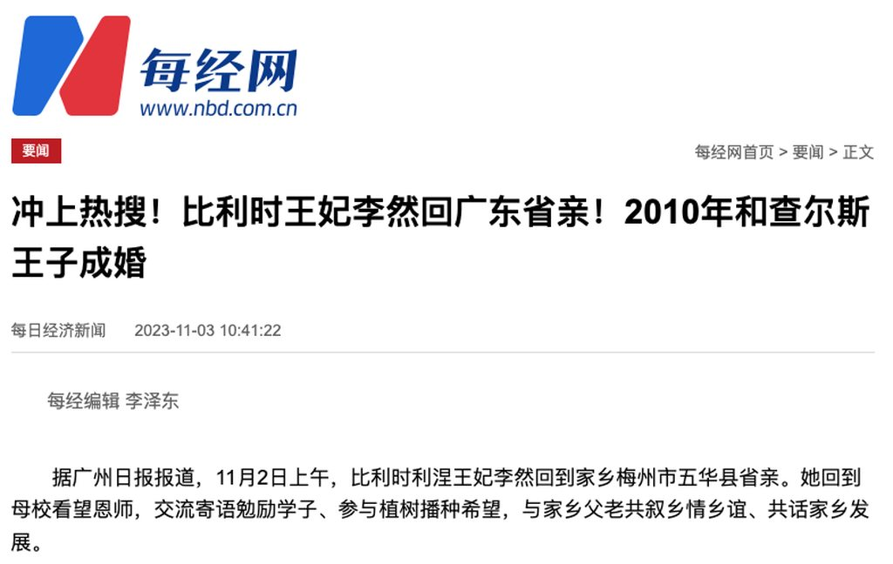
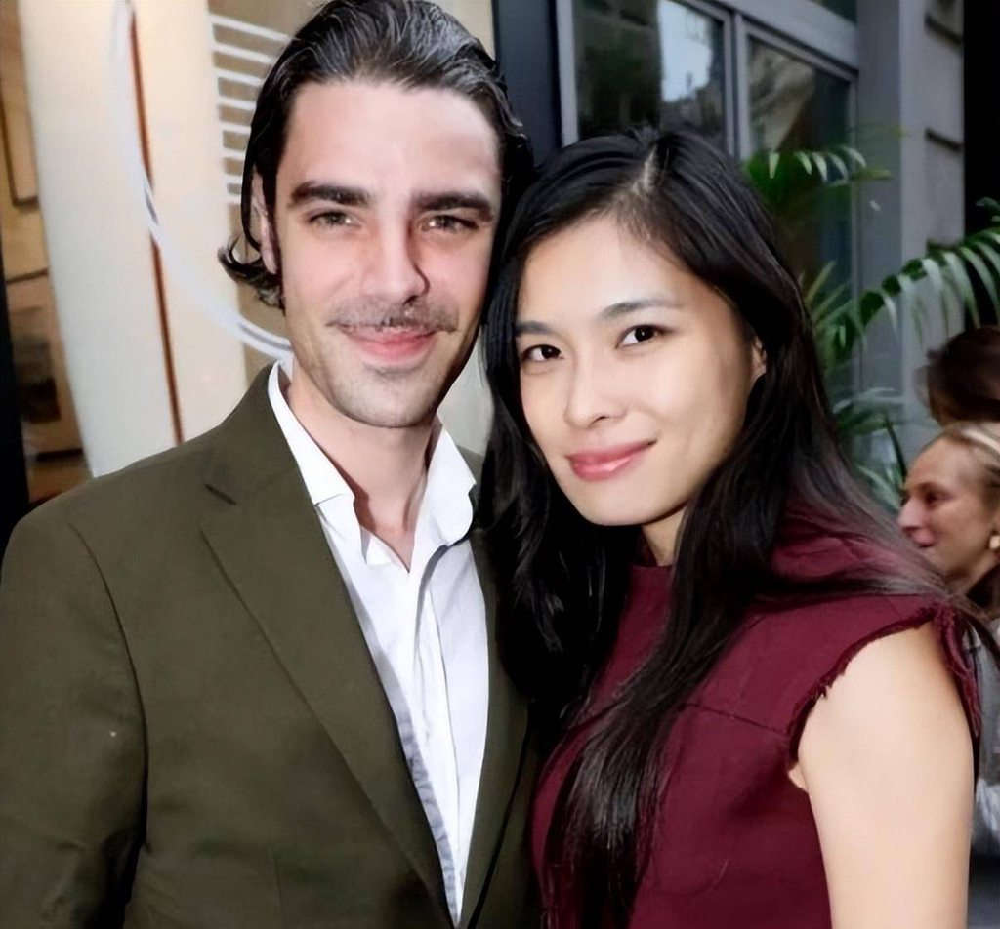
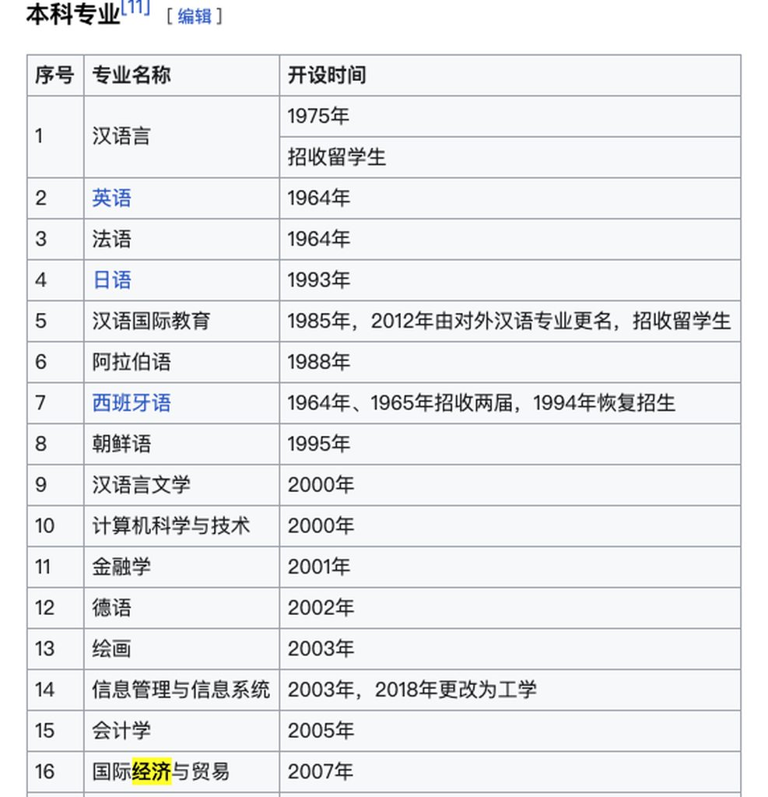
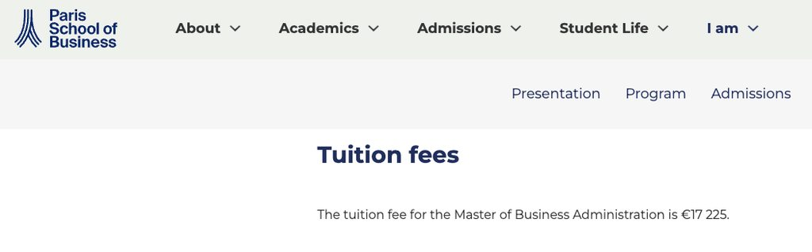
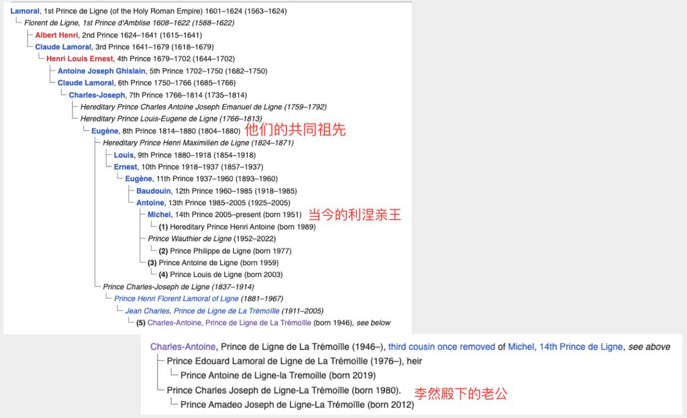

信息来源
广州日报
11月2日上午，比利时利涅王妃李然回到家乡广东省梅州市五华县省亲。她还回到母校五华县第三幼儿园（原五华师范附属小学）看望恩师，并和当地学校的“学弟学妹”们进行了交流。据悉，李然还将应邀参加在梅州举办的第六届世界客商大会活动。
李然是地道的“客家妹”，她在五华出生长大。在惠州读书时，李然成绩优异，并于2002年考取了北京语言大学。毕业后，李然留学巴黎，先后在巴黎索邦大学和巴黎高等管理学院等高校学习。随后她与比利时利涅家族查尔斯王子相识相恋，并于2010年与查尔斯王子低调成婚，成为比利时首位亚裔王妃。
文/记者：陈家源

 图：李然和查尔斯·约瑟夫
灰姑娘和王子如何相恋？
粤语维基百科资料：
李然（1984年3月28号—）系比利时利涅亲王（Charles-Joseph Malcolm de Ligne-La Tremoille）王妃，广东惠州出世，系比利时头一位华裔女贵族。
李然阿爸叫李玉辉，系惠州高官。2002年到2006年，李然读北京语言大学经济学学位，之后去法国，读过巴黎索邦大学，再去巴黎管理学院读MBA。李然喺2009年喺法国巴黎识到比利时利涅亲王，拍拖年半后喺2010年11月20号结婚，李然亦做咗比利时贵族，2012年6月12号生咗王子仔Amadeo。之后佢搬咗去上海住，做紧欧洲高级品牌嘅主管。
百度百科资料：
1984年3月28日，李然出生于广东五华，曾在惠阳上初中，2002年毕业于惠州一中。
李然在高一时担任班长，因为性格温和，很讨人喜欢，所以班上的同学都很配合班级管理。李然平时专注于学习，成绩一直很好，高二去了重点班，高三则选择了到历史班就读。网友@Una亦楠说，自己和李然是惠阳一中(初中)同班同学，李然学习成绩在全级名列前茅，“而且是经常看漫画书还能拿全级第一的那种”。
2002年至2006年期间，李然在
北京语言大学攻读金融学专业，并获得了经济学学士学位，其父母当年在惠阳工作。
毕业后，李然开始了两年的留学生涯，先是在巴黎
索邦大学学习法国语言与文明课程，而后入读巴黎高等管理学院奢侈品营销和管理专业的MBA学位。两年的留学经历让李然精通英语、法语。
李然曾在
纪梵希门店做过一年实习生，之后在巴黎世家和芬迪(Fendi)两家顶尖奢侈品牌门店做销售。彼时，查尔斯·莱莫罗·约瑟夫·马尔科姆是巴黎的一名设计师。
李然婚后定居上海，就职于一家欧洲奢侈品牌做主管。
简单看看李然的简历：
- 本科毕业于北京语言大学，该校是教育部直属，盛产外交人员，非 911 名校，毕业后连字节简历关都过不了
- 北京语言大学金融学并非特色专业，该专业成立于 2001 年，李然亲王妃殿下 2002 年入学就读这样一个假大空专业，注定毕业即失业 
- “两年的留学生涯，先是在巴黎索邦大学学习法国语言与文明课程，而后入读巴黎高等管理学院奢侈品营销和管理专业的MBA学位。” 这个不用多说，索邦大学和巴黎高等管理学院均是名校，但是这个人是去索邦大学学习语言，然后去 PSB 就读 MBA，这是典型的赛里斯国内富二代找爹妈爆金币读水硕的路线，这个学校学费才 17225 欧元，也算不上什么大额消费，所以说她父母是惠州高官也是胡扯，应该是个普通中产，高官不可能委屈自己孩子去当销售。 
李然殿下这个简历乏善可陈，其人生中最重要的事情就是去奢侈品门店做销售认识了比利时贵族查尔斯。
李然 - 維基百科，自由嘅百科全書
李然（1984年3月28號—）係比利時利湼親王（Charles-Joseph Malcolm de Ligne-La Tremoille）王妃，廣東惠州出世，係比利時頭一位華裔女貴族。
https://zh-yue.wikipedia.org/wiki/李然
查尔斯·约瑟夫是不是利涅王子？
利涅亲王确实是比利时贵族，但是这个亲王是封号，他们和比利时皇室毫无血缘关系，当今的利涅亲王是 Michel (第十四代利涅亲王) ，他是第十三代利涅亲王安托万和卢森堡的阿历克斯·玛丽公主之子，算是有旁系的皇室血统。
用家谱简单看看他们之间的关系，李然殿下的老公是 Prince Charles Joseph de Ligne-La Trémoïlle. 他是”利涅和拉特莱莫伊勒亲王“这个称号的继承人，拉特莱莫伊勒亲王是来自李然殿下的老公的曾祖母一个亲王封号，将”利涅和拉特莱莫伊勒亲王“简称为利涅亲王简直和将北京语言大学称为北大一样抽象。这家人在两百年前就已经失去了利涅亲王的封号继承权了，并且在 100 年前他们另立门户继承母姓成了利涅和拉特莱莫伊勒亲王家族，现在回家敬酒都排不到前面。

归根结底李然殿下的老公依然勉强算是个贵族，她也通过结婚这一古老的技术实现了人生阶级的跨越，确实是可喜可贺。
赛里斯人接力吹牛逼把人家吹成了“比利时王妃”、“利涅王妃”，简直是抽象至极。这也能从侧面反映出赛里斯人特别是梅州人那种刻在骨子里的自卑，梅州临近富庶的潮汕地区，但却因为地处山区而成为国家级的贫困地区，他们太想要通过嫁给王子来实现一朝飞上枝头变凤凰的春秋大梦了！李然殿下的人生已然成为了这个地区的一种集体精神和意识，成为了他们的精神支柱。
这个世界上有骁勇善战的北欧人、彬彬有礼的日本人、自由放浪的美国人、求索真理的欧洲人，但是我都不佩服，我只佩服看见一坨狗屎都要尝尝咸淡的赛里斯人。
给我们的人生启示
老老实实打工是没有出路的，去金钱聚集的地方工作更容易实现阶级跨越，典型的例子：
- 高档小区的健身房教练、瑜伽老师
- 深圳湾万象城的保安、柜姐
- 头等舱空姐、空少
- 豪车、豪宅销售